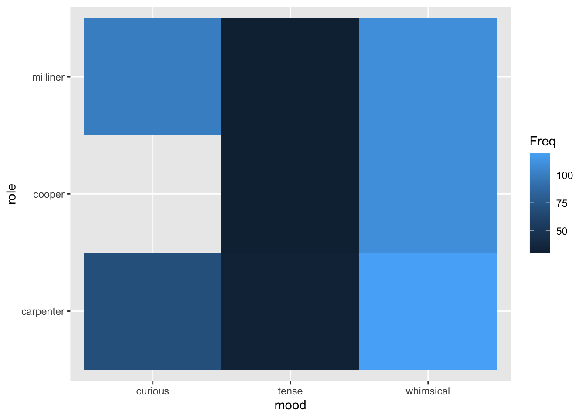

Topic 10 More fun with linear models
In this section we’ll take a look at some extra features of linear models that it will be good to know about things that a linear model can do beyond looking for significant differences. We’ll look at assessing whether a linear model is a good one, from a model fit point of view, we’ll briefly discuss how to make predictions from linear models to guide hypothesis building and we’ll briefly discuss the next level of linear model, the generalised linear model.
10.1 Assessing a linear model
A decent linear model fit to the data is essential for good statistical analysis with a linear model. The quality of fit to a linear model can be used to assess whether the data are appropriate for a particular test, even if we intend to just use the test. If we don’t get a reliable fit we don’t get a result we can be confident in from either the linear model and crucially, neither would we if we did the corresponding tests, like the \(t\)-test and ANOVA. Let’s examine some model fits.
10.1.1 The terror of normality
Scientists that have done at least a little statistics often seem concerned that their data must be normally distributed for an analysis to be valid. This may stem from reviewers who will ask whether ‘the test is appropriate for the sort of data analysed’ or related ‘whether the distribution of the data is normal’. These questions are sometimes legitimate, thankfully they are easy to answer and you should ask them of your data when you build your model because the answers will help you understand the goodness of your model. The good news is that you don’t need to worry about your data being a super typical normal distribution, instead you can check whether the data are normal enough. All the tests and linear models will be very robust and even tend toward conservatism in their results if the data are all of the below:
- represented well by their mean
- have a linear pattern in the residual
- show a reasonable correlation in a qq-plot
10.1.2 Checking whether the mean is a good summary
The first thing to check, whether you intend to do a simple \(t\)-test or a multi-way ANOVA is whether the mean is actually a good summary of the whole of the data. If you have multiple variables you’ll need to check the means of each one. A mean is a good summary of a set of data if it sits nicely in the middle and there are no other peaks or skew in a histogram of that data. This is easier to think about if we draw some pictures. In this set of panels of histograms with density plots the mean (the vertical line) is an increasingly poor summary of the data.

The first two, a normal distribution and a normal distribution with a very wide standard deviation are summarised quite well by the mean. They have the mean at the peak, with the rest of the data falling evenly away. The third, the uniform distribution (in which all outcomes are equally likely) has no peak because the central outcome isn’t more likely than the others so is less good, but still quite well summarised by the mean. The final two aren’t nearly as well summarised well by the mean, the skew-normal distribution has the mean away from the peak because of the long tail and the multimodal has more than one peak. The take-home here is that the model fit and assumptions are increasingly poor as we move along, not that the tests and models become completely useless. In practice our conclusions must become more circumspect and a single test is less convincing.
10.1.3 Spotting a good fit to the data
Another thing you can do to assess your linear model is check out the residuals. Remember we described these as the distance between the actual data and the fitted line. The distribution of these tells us a lot. Let’s think about these two data sets,
close_fit <- its_random_xy_time(20)
far_fit <- data.frame(
x <- runif(20, 5, 15),
y <- runif(20, 5, 15)
)
its_plot_xy_time(close_fit, line = TRUE)
its_plot_xy_time(far_fit, line = TRUE)

We can see the first has a fairly good slope and the points are all relatively close to the line, while in the second the slope is weak because the points are further away. The lm() function calculates the residuals and we can plot them.
close_fit_model <- lm(y ~ x, data = close_fit)
far_fit_model <- lm(y ~ x, data = far_fit)
plot(close_fit_model, which = 1)
plot(far_fit_model, which = 1)
Here we see the \(x\)-axis value is the value from the model, so the \(x\)-axis value of a data point, the \(y\)-axis value is the residual itself the distance between the line \(y\) value and the observed \(y\) value. The first plot shows a nice even scatter and flat line and a range of -2 to 2. The second shows a more erratic scatter with the red line having a little wobble and a much higher range, from - 6 to 4.
Together they show us that the second model doesn’t fit as the data as closely as the first, the increased residual size and the more wobbly line mean it isn’t as good. Its still not useless though, a wobbly line is still ok, we would be more worried if we had these data, which have some hidden structure in. Here’s a non-linear data set and its residual plot
non_linear_data <- tibble::tibble(
x = 1:20,
y = (x ^ 2 ) + runif(20, 3, 60)
)
its_plot_xy_time(non_linear_data, line = TRUE)
non_linear_model <- lm(y ~ x, data = non_linear_data)
plot(non_linear_model, which = 1)
Which has quite the pattern in the residual plot!! The data were actually a \(y = x^2\) relationship with some noise added. By viewing the \(x\) vs \(y\) plot we don’t easily see that relationship, but the residuals very definitely show that the linear model doesn’t fit the data well, the structure in the residual plot indicates that the model is failing to capture some part of our data. As you might imagine, linear models (and related tests) performed with non-linear data will not give good results.
10.1.4 Checking qq-plots for a normal distribution
The qq-plot tests the question of whether data are normally distributed directly. Here the \(x\) values are basically random numbers drawn from a normal distribution with mean and standard deviation the same as the model data and the \(y\) values are the real data. This is easy to do with ggplot()
library(ggplot2)
ggplot(close_fit) + aes(sample = y) + stat_qq() + stat_qq_line()
ggplot(far_fit) + aes(sample = y) + stat_qq() + stat_qq_line()
ggplot(non_linear_data) + aes(sample = y) + stat_qq() + stat_qq_line()


These often deviate at the ends of the scatter plot, but the centre parts should fall along the line with random deviation. Here, with these particular data sets, the close_fit and far_fit appear to be matching marginally better overall than the non_linear which is veering around the line quite a lot.
and again, we can also do this with the residual data which should also be normally distributed, here the lm() function does a lot of the work for us.


10.2 Predictions
Sometimes we will want to use our existing data to build hypotheses for testing with new experiments. The linear model can be used to aid this by using it as a tool to predict what the model outputs would be given a particular set of inputs across the variables that we used to build our model. In this section we’ll take a look at doing things like predicting new data on our response (\(y\)-axis) given some \(x\) values.
10.2.1 Intuition on prediction from continuous variables
The intuition behind this is more straightforward than you might initially think, consider the straight lines from our first section. We had a continuous \(x\) and \(y\) axis

We can peek into \(x\) to see what values we actually used
## [1] 5.824327 5.895516 7.105123 7.179086 7.375033 7.855269 7.912222
## [8] 8.319600 8.729459 8.852362 9.532381 10.989182 11.510336 12.167571
## [15] 12.329553 12.551050 12.883979 13.216811 13.431172 13.521335model <- lm(y ~ x, data = df)
b <- coefficients(model)[1]
a <- coefficients(model)[2]
predict(model, newdata = data.frame(x = c(10)))## 1
## 20.33266Ok, so we don’t have a real \(x = 10\) in our data. Imagine asking the question “what \(y\) would we get for \(x = 10\)?”. We can intuitively tell what the \(y\)-value would be simply by reading off the line at \(x = 10\), which is about 20 or from the formula, \(y = (1.9555 * 10) + 0.7780 = 20.33\). This is the intuition behind how a linear model prediction works with continuous \(x\) and \(y\) - we’re just reading off the line.
If we build the model, we can ask it to work this out for us directly using the predict() function. predict() takes the model and the new values to be predicted in a data.frame.
We see that we get the same value (given a little rounding error).
What happens when we give the predict() function a value we did have data for? Let’s pull out whatever the fifth value of our data was and look at that
## [1] 12.88398## [1] 24.32715This shows us that the \(x\) axis value of 12.88 had the corresponding \(y\) value of 24.33. Now let’s use the model to predict the \(y\) from the \(x\)
## 1
## 25.97217The result from the model is quite different from the actual observed data value! This isn’t an error. Its because we’re asking the model to predict using the ‘line’ it came up with. Note that this is because the prediction comes from the model which takes into account the whole data. This is the process of ‘best fitting’ which ensures the ‘line’ matches all the points as well as possible, but doesn’t guarantee matching any particular point well.
10.2.1.1 Prediction intervals
If you are going to predict a value, you might want instead an interval in which that prediction might lie with certain amount of certainty. Like a confidence interval for the position of the mean in a sample, a prediction interval is a range that we are most certain a prediction will land in. This interval takes in the range of spread in the data we build the linear model with and turns it into something useless. Once the model is built, it’s easy to use the predict() function to get the prediction interval
vals_to_predict <- data.frame( x = c(10) )
predict(model, newdata = vals_to_predict, interval = "predict")## fit lwr upr
## 1 20.33266 17.52743 23.13788we can see the predicted value and the lower and upper bounds of the prediction interval.
10.2.2 Intuition on prediction with categoric variables
In the same way we looked at the line to get an intuitive understanding of how the linear model makes predictions, we can look at the groups in a categorical variable to see how \(y\) values are predicted from factors.
Consider the chickwts data.

We can see that in this data set there is a single categorical variable called feed which is the type of food the chick was raised on, and the resulting continuous output variable of weight. If we model that and do a prediction we can get an intuition on what the prediction() means for each category.
## 1
## 323.5833## 1
## 328.9167Note that this time we have to use the a level of a factor, because that was the only term in this model. It doesn’t make sense to give it a number. The model returns the fitted value of weight for the level of the factor.
Do the numbers return remind you of anything? Aren’t they awfully close to where we expect the mean of each group to be. Let’s check that out by doing a prediction for each feed and comparing with the group mean.
#first get a vector of the chickwts feed names
feeds <- sort(unique(chickwts$feed))
#do the prediction
preds <- predict(model,newdata = data.frame(feed = feeds) )
#add the names for clarity
names(preds) <- feeds
preds## casein horsebean linseed meatmeal soybean sunflower
## 323.5833 160.2000 218.7500 276.9091 246.4286 328.9167Now calculating the mean from the data.
## # A tibble: 6 x 2
## feed mean
## <fct> <dbl>
## 1 casein 324.
## 2 horsebean 160.
## 3 linseed 219.
## 4 meatmeal 277.
## 5 soybean 246.
## 6 sunflower 329.Yep, they’re the same. This gives us the intuition that for the model of categoric data the prediction for each group in the category is the centre of it. It may not always be the exact mean, but it’s a useful way of thinking about it.
10.2.3 Using predictions in more complicated models
A significant use of predictions is when we have a mixture of variables that we can’t easily just see the mean for and want to know what the model thinks of those. This is especially useful for hypothesis generation or finding out possible parameter ranges for new experiments. As the last thing we’ll do with predictions we’ll look at the txhousing data, a data set about housing in Texas. This data has a mixture of continuous and categoric variables. We’ll see that this it isn’t more complicated than prediction for a single variable but does give us a much more convenient and powerful way to predict an outcome from provided values.
First a quick look at txhousing.
## tibble [8,602 × 9] (S3: tbl_df/tbl/data.frame)
## $ city : chr [1:8602] "Abilene" "Abilene" "Abilene" "Abilene" ...
## $ year : int [1:8602] 2000 2000 2000 2000 2000 2000 2000 2000 2000 2000 ...
## $ month : int [1:8602] 1 2 3 4 5 6 7 8 9 10 ...
## $ sales : num [1:8602] 72 98 130 98 141 156 152 131 104 101 ...
## $ volume : num [1:8602] 5380000 6505000 9285000 9730000 10590000 ...
## $ median : num [1:8602] 71400 58700 58100 68600 67300 66900 73500 75000 64500 59300 ...
## $ listings : num [1:8602] 701 746 784 785 794 780 742 765 771 764 ...
## $ inventory: num [1:8602] 6.3 6.6 6.8 6.9 6.8 6.6 6.2 6.4 6.5 6.6 ...
## $ date : num [1:8602] 2000 2000 2000 2000 2000 ...Now let’s build a linear model of property sale price predicted by the city it’s in and the year and month of sale.
And finally get a prediction for a particular case.
## 1
## 65392.3This shows how the linear model can be used to make predictions and hypothesis for further work.
10.3 Generalized Linear Models
Generalized Linear Models (GLMs) are, as the name might suggest, a generalization of the linear model that can be used when the residuals are not normally distributed. We went to quite a lot of trouble in this chapter to learn how to identify normally distributed residuals and input data and to press home the idea that if we do have data that look mostly normal then the linear model is still a useful tool. However, there are many situations where your data isn’t going to be anything like normal and thats where a GLM is helpful. GLMs are particularly useful instance in non-linear situations like exponentially changing data or count data, indeed in earlier chapters we did see some data that definitely didn’t fit a normal (though we didn’t point it out explicitly at the time) the frequency data in the \(\chi^2\) test section wasn’t usable in a linear model without a great deal of fiddling.
GLMs can be thought of as clever linear models that you can specify the type of distribution the residual has, this means the mathematics is a lot more complicated, but in practice it’s just another function in R glm() which is related to lm() and functions much like it but has some extra options to set.
GLMs are a powerful thing and great to know about, and once you’ve got the hang of linear models not terribly hard to use, keep them in mind as you work through your analyses and if you come across a data set that doesn’t seem to fit well with linear models, maybe you need to move over to a GLM.